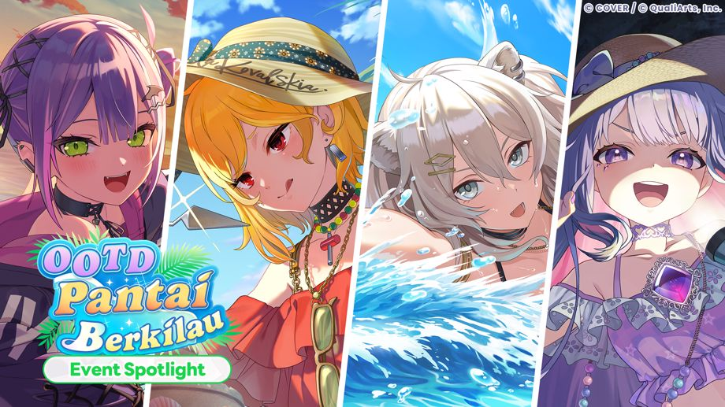
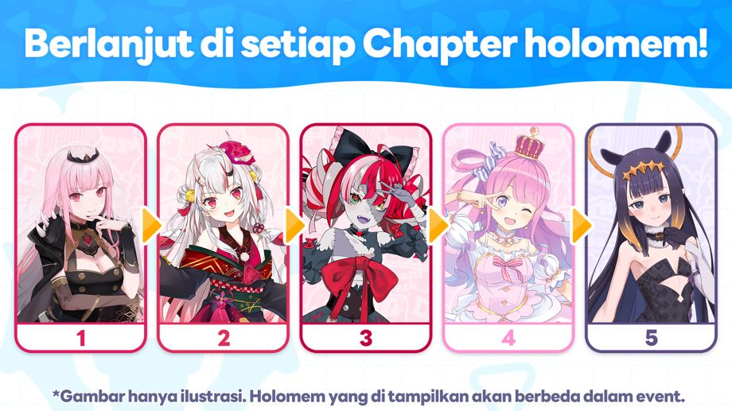
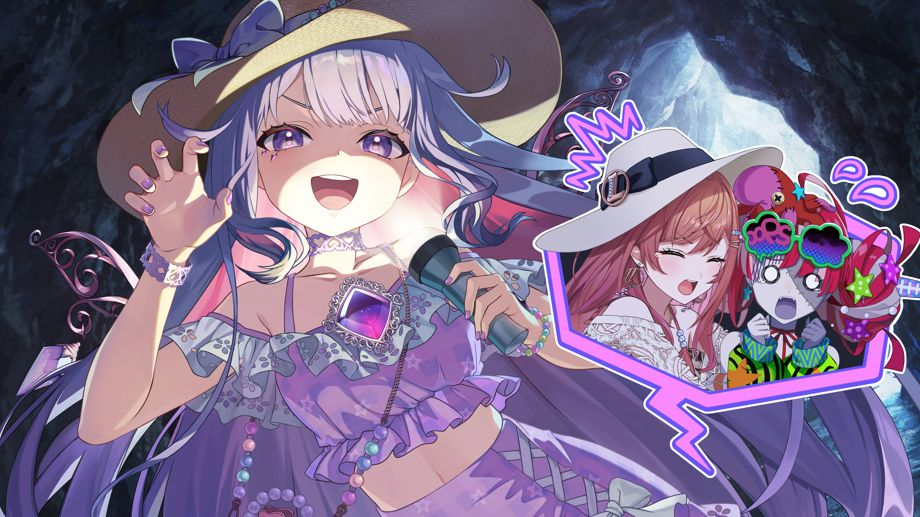
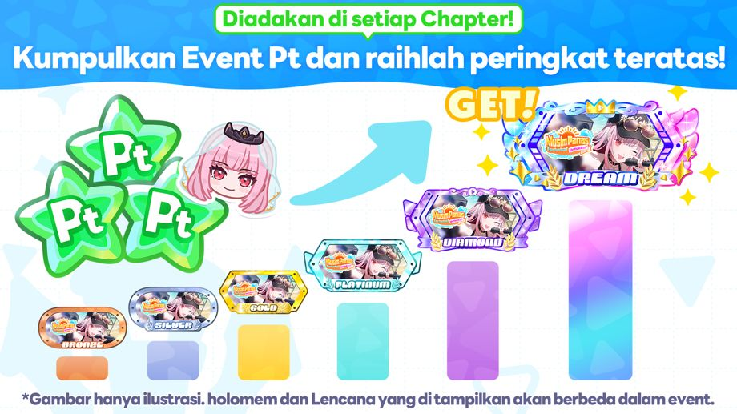
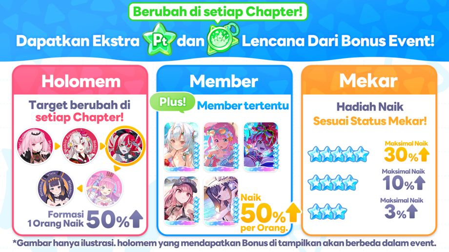
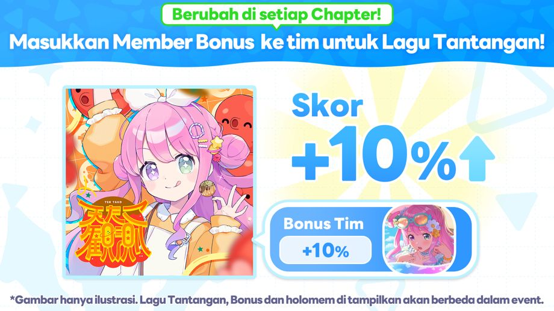
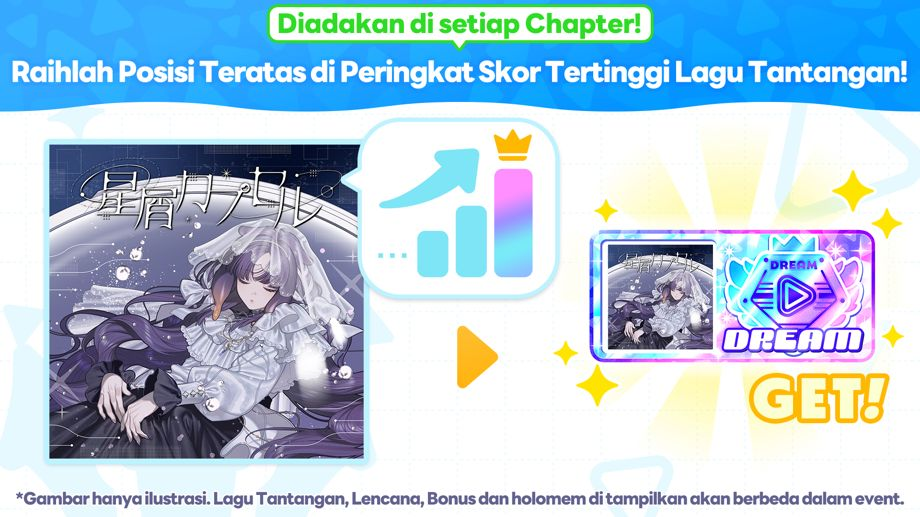

Event Spotlight "OOTD Pantai Berkilau" sedang berlangsung!
◆Persyaratan Partisipasi
Menyelesaikan Cerita Utama Chapter 1 Episode 4 "Legenda Yang Terhubung".
◆Periode Event
・Periode Event
2026-10-19 20:00:00,2026-10-27 19:59:59
・Chapter 1: Tokoyami Towa
2026-10-19 20:00:00,2026-10-21 19:59:59
・Chapter 2: Kaela Kovalskia
2026-10-21 20:00:00,2026-10-23 19:59:59
・Chapter 3: Shishiro Botan
2026-10-23 20:00:00,2026-10-25 19:59:59
・Chapter 4: Koseki Bijou
2026-10-25 20:00:00,2026-10-27 19:59:59
◆Periode Hasil Pengumuman
Chapter 1: 2026-10-22 12:00:00 ~
Chapter 2: 2026-10-24 12:00:00 ~
Chapter 3: 2026-10-26 12:00:00 ~
Chapter 4: 2026-10-28 12:00:00 ~
Periode pengumuman hasil semua chapter berakhir pada 2026-11-02 19:59:59.
◆Periode Pembagian Hadiah Peringkat
2026-10-28 12:00:00,2026-11-02 19:59:59
◆Batas Penukaran Lencana Event
2026-11-02 19:59:59
Ringkasan Event

Event Spotlight berlangsung dalam chapter terpisah untuk setiap holomem.
Mainkan Live atau Mini-game untuk memperoleh Event Pt dan Lencana Event selama setiap periode chapter.
Kumpulkan Event Pt di setiap chapter untuk membuka cerita chapter tersebut.
Lencana Event dari setiap chapter dapat ditukarkan dengan Memori Event dan item lainnya di Tempat Penukaran.
◆Memori Event
・Chapter 1: Tokoyami Towa

・Chapter 2: Kaela Kovalskia

・Chapter 3: Shishiro Botan

・Chapter 4: Koseki Bijou

Ranking Event Pt

Peringkat Event Pt setiap chapter ditentukan dari total akumulasi perolehan Event Pt selama periode chapter.
Dengan berada di dalam peringkat, pemain akan mendapatkan hadiah seperti Lencana eksklusif dari event.
*Untuk detail lebih lanjut, silakan periksa di [Event]→[Peringkat]→[Ranking Event Pt].
Bonus yang Diperoleh dari Event

Di Event Spotlight, target Bonus Event berubah di setiap chapter.
Bonus Event meliputi peningkatan jumlah Event Pt dan Lencana Event yang diperoleh di Live.
Ada tiga jenis bonus yang bisa diperoleh ketika memainkan Live yaitu "Bonus Member", "Bonus Holomem", dan "Bonus Mekar".
・Bonus Member: Memainkan Live dengan member yang diminta di dalam tim akan memberikan bonus tambahan.
・Bonus holomem: Memainkan Live dengan holomem yang diminta di dalam tim akan memberikan bonus tambahan.
・Bonus Mekar: Jumlah hadiah yang diperoleh dari Live akan meningkat sesuai dengan status Mekar yang ada di dalam tim.
Selain itu, Bonus Event juga termasuk bonus yang meningkatkan Event Pt dan Lencana Event yang diperoleh dari Minigame.
Ada dua jenis bonus yang bisa diperoleh dari Minigame, yaitu "Bonus Minigame" dan "Bonus Member".
・Bonus Minigame: Bonus tambahan bisa diperoleh dengan memainkan Minigame yang ditentukan.
・Bonus Member: Hanya dengan memiliki Member yang ditentukan, bonus tambahan akan diperoleh.
◆holomem yang Memperoleh Bonus
Chapter 1: Tokoyami Towa
Chapter 2: Kaela Kovalskia
Chapter 3: Shishiro Botan
Chapter 4: Koseki Bijou
◆Member Bonus (Berlaku di Semua Chapter)
・★5 Rehat Tenang Rimbun Tokoyami Towa
・★5 Memori Kisah Teduh Kaela Kovalskia
・★5 Ritual Lahap Ramen Shishiro Botan
・★5 Istana Pasir Ceria Koseki Bijou
◆Bonus Mini-game(Berlaku di Semua Chapter)
・Collect Cooking
*Untuk informasi lebih lanjut, silakan periksa [Event]→[Bonus Event].
Bonus Skor Event

Bonus Event meliputi bonus skor yang akan menambah skor pemain selama periode tertentu ketika pemain memakai tim dengan member yang bisa mendapatkan bonus dan memainkan lagu yang ada pada event tersebut.
Member yang bisa mendapatkan bonus skor bervariasi tergantung lagu event.
Lagu Tantangan Event berubah di setiap chapter.
Lagu Tantangan Event
Chapter 1: Shallow Shadow
Chapter 2: Forge My Soul
Chapter 3: Amaryllis
Chapter 4: CORE//UNBREAKABLE
*Untuk informasi lebih lanjut, silakan periksa [Event]→[Bonus Event].
Peringkat Skor Tertinggi

Peringkat Skor Tertinggi setiap chapter adalah peringkat skor dari setiap Lagu Tantangan selama periode event.
Dengan berada di dalam peringkat, pemain bisa mendapatkan Lencana eksklusif dari event.
*Pada Lagu Tantangan Event, skor periode terbatas event dan skor biasa keduanya akan tersimpan.
*Untuk informasi lebih lanjut, silakan periksa [Event]→[Peringkat]→[Skor Terbaik]
Catatan Penting
・Event Point dan Lencana Event yang diterima di event ini tidak akan dilanjutkan ke event berikutnya.
・Mohon diperhatikan juga bahwa Lencana Event yang sudah kadaluwarsa tidak bisa digunakan.
・Hadiah Peringkat diambil di [Taman] → [Ikon Menu] → [Hadiah] selama masa berlaku.
・Jika tidak login selama periode pembagian hadiah peringkat, Anda tetap bisa mengambilnya di menu Hadiah setelah periode berakhir.
・Hadiah misi yang belum diambil dapat diterima di [Taman] → [Ikon Menu] → [Hadiah] meskipun setelah periode berakhir.
・Memori Event yang bisa ditukar di Toko Penukaran pada event ini bisa muncul di event mendatang.
・Setelah periode pengumuman hasil berakhir, cerita event dapat dilihat di [Teater] → [Cerita holomem] → [Cerita Setiap holomem].
・Akibat pengaruh kondisi jaringan atau faktor lainnya, dapat terjadi selisih waktu sekitar 1 detik pada waktu mulai dan selesai.
・Konten dan periode event bisa bisa berubah sewaktu-waktu tanpa pemberitahuan terlebih dahulu.
・Untuk informasi lebih lanjut, silakan periksa [Dream Park]→[Event]